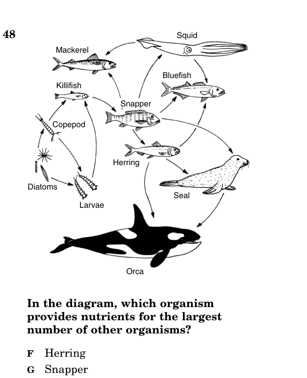

- Carrying capacity, limiting factors, growth curves
- Biotic vs. abiotic factors
- Population interactions (competition, predation, symbiosis)
- Graph and interpret population growth curves
- Food chains, food webs, energy pyramids, biomass pyramids
- Carbon cycle (photosynthesis, respiration, combustion, decomposition)
- Nitrogen cycle (fixation, nitrification, denitrification)
- Trophic levels and energy transfer (~10% rule)
- Primary succession (bare rock → pioneer species → climax)
- Secondary succession (after disturbance, soil remains)
- Climax community (Virginia = deciduous oak-hickory forest)
- Aquatic and terrestrial succession patterns
- Habitat destruction, pollution, invasive species, overexploitation
- Climate change effects on ecosystems
- Eutrophication from excess nutrients
- Virginia watersheds and ecosystem solutions
| Term | One-Line Definition |
|---|---|
| Ecosystem | All living organisms + nonliving environment in a geographic area |
| Population | Group of same species living in the same area at the same time |
| Community | All populations of different species interacting in an area |
| Biotic Factor | Living components of an ecosystem (predators, prey, competitors) |
| Abiotic Factor | Nonliving components (temperature, water, sunlight, pH, soil) |
| Carrying Capacity | Maximum population an environment can sustain with available resources |
| Limiting Factor | Resource or condition that restricts population growth |
| Food Chain | Linear pathway showing energy flow from producer to consumers |
| Food Web | Interconnected food chains showing complex feeding relationships |
| Trophic Level | Feeding position in a food chain (producer, primary consumer, etc.) |
| Producer | Organism that makes its own food (autotroph); base of energy pyramid |
| Consumer | Organism that eats other organisms for energy (heterotroph) |
| Decomposer | Organism that breaks down dead matter, recycling nutrients |
| Energy Pyramid | Diagram showing energy decreases at each trophic level (~10% transferred) |
| Biomass Pyramid | Diagram showing total mass of organisms at each trophic level |
| Carbon Cycle | Movement of carbon through atmosphere, organisms, and Earth |
| Nitrogen Cycle | Movement of nitrogen through atmosphere, soil, and organisms |
| Nitrogen Fixation | Converting atmospheric N₂ into usable forms (by bacteria) |
| Primary Succession | Colonization of bare rock/new land with NO soil; starts with pioneer species |
| Secondary Succession | Recovery after disturbance where SOIL remains; faster than primary |
| Pioneer Species | First organisms to colonize bare area (lichens, mosses) |
| Climax Community | Stable, mature ecosystem at end of succession (VA = oak-hickory forest) |
| Eutrophication | Excess nutrients cause algal bloom → oxygen depletion → fish kills |
| Invasive Species | Non-native organism that harms the ecosystem it enters |
| Biodiversity | Variety of species in an ecosystem; higher = more stable |
| Watershed | Area of land that drains into a common body of water |
- A1 question
- BAbout 6 questions
- CAbout 15 questions
- D25 questions
- AReading carrying capacity from a population graph
- BNaming every species in a forest ecosystem
- CDrawing food webs from scratch
- DCalculating the exact pH of soil
Answer honestly — these help Mr. England see where you're starting.
- Aa population
- Ban experimental group
- Ca community
- Da kingdom
- ATop predators (bass)
- BProducers (algae)
- CPrimary consumers (minnows)
- DSecondary consumers (copepods)
- Adecreased oxygen levels
- Bincreased water temperatures
- Cdecreased mineral sources
- Dincreased water levels
A population is a group of organisms of the SAME species living in the same area at the same time. A community is all the populations of DIFFERENT species interacting in an area. An ecosystem includes the community PLUS all the nonliving (abiotic) factors in the environment.
| Biotic (Living) | Abiotic (Nonliving) |
|---|---|
| Predators, prey, competitors | Temperature, sunlight |
| Food sources, parasites | Water, moisture, rainfall |
| Disease-causing organisms | Soil nutrients, pH |
| Mates, symbiotic partners | Salinity, air composition |
When a population enters a new environment with abundant resources, it grows exponentially (J-shaped curve). But resources are finite. As the population grows, competition increases, food becomes scarce, and disease spreads. Growth slows and eventually the population levels off at the carrying capacity (S-shaped or logistic curve).
Carrying capacity (K) is the maximum number of organisms an environment can support long-term with available resources. On a graph, it's where the population line plateaus.
Limiting factors are resources or conditions that restrict population growth. When a limiting factor runs out, the population can't grow further. Examples: food, water, shelter, space, mates, sunlight (for plants). Disease and predation also limit populations.
| Interaction | Description | Example |
|---|---|---|
| Competition | Two species compete for the same resource | Lions and hyenas competing for prey |
| Predation | One organism kills and eats another | Hawk eating a mouse |
| Mutualism | Both species benefit | Mycorrhizal fungi + plant roots (fungi get sugars, plant gets minerals) |
| Commensalism | One benefits, other is unaffected | Barnacles on a whale |
| Parasitism | One benefits, other is harmed | Tick feeding on a dog |
(2005-37) A graph of sheep population in Tasmania from 1840-1920 suggests the carrying capacity was approximately —
- Amutualism
- Bcompetition
- Cpredation
- Dparasitism
- Aherbivores
- Bwater
- Csunlight
- Dspace
- A1 per 100 acres
- B1 per acre
- C1 per 1,000 acres
- D1 per 10 acres
- Abacterial infection in one individual
- Ba single season of drought
- Cthe death of only a few individuals
- Dcompetition with other species
A food chain is a linear pathway showing energy flow: Producer → Primary Consumer → Secondary Consumer → Tertiary Consumer. A food web shows multiple interconnected food chains in an ecosystem, representing the complex feeding relationships among all organisms.
Energy enters most ecosystems as sunlight, which producers (plants, algae) convert to chemical energy through photosynthesis. Consumers obtain energy by eating other organisms. Decomposers (bacteria, fungi) break down dead organisms and recycle nutrients back into the ecosystem.
| Trophic Level | Type | Energy | Example |
|---|---|---|---|
| 1st (base) | Producers | Most energy (100%) | Grass, algae, trees |
| 2nd | Primary consumers (herbivores) | ~10% of producer energy | Grasshoppers, rabbits, zooplankton |
| 3rd | Secondary consumers | ~1% of original | Frogs, small fish, snakes |
| 4th | Tertiary consumers (top predators) | ~0.1% of original | Hawks, sharks, lions |
Carbon moves through the ecosystem via four main processes:
| Process | What Happens |
|---|---|
| Photosynthesis | Plants absorb CO₂ from atmosphere and convert it to glucose (organic carbon) |
| Cellular respiration | All organisms release CO₂ back to atmosphere by breaking down glucose |
| Combustion | Burning fossil fuels releases stored carbon as CO₂ into atmosphere |
| Decomposition | Decomposers break down dead organisms, releasing CO₂ and returning carbon to soil |
Nitrogen is essential for building proteins and DNA, but most organisms can't use atmospheric N₂ directly. The nitrogen cycle converts nitrogen between usable and unusable forms:
| Process | What Happens |
|---|---|
| Nitrogen fixation | Bacteria convert N₂ gas → ammonia (NH₃) that plants can absorb |
| Nitrification | Bacteria convert ammonia → nitrates (NO₃⁻) that plants prefer |
| Assimilation | Plants absorb nitrates; animals get nitrogen by eating plants |
| Decomposition | Decomposers break down dead organisms, releasing nitrogen as ammonia |
| Denitrification | Bacteria convert nitrates back to N₂ gas, returning it to atmosphere |
- AHuman — heterotroph
- BFish — autotroph
- CGrass — heterotroph
- DMushroom — autotroph
- Amushrooms
- Bhawks
- Cgreen plants
- Drabbits
- AA pine tree
- BA dandelion
- CA mushroom
- DA caterpillar
- Adecaying processes
- Bradiation
- Cwater
- Dfood consumption
Ecological succession is the predictable, gradual change in the species that make up a community over time. It follows a pattern: simple, hardy organisms colonize first, then are gradually replaced by more complex species until a stable climax community is reached.
Primary succession occurs on surfaces where NO soil exists — bare rock, new volcanic islands, areas exposed by retreating glaciers. It is very slow (can take hundreds to thousands of years) because soil must be created from scratch.
| Stage | What Happens |
|---|---|
| 1. Pioneer species | Lichens (fungus + algae) and mosses colonize bare rock. They break down rock into tiny particles, beginning soil formation. |
| 2. Soil builds | As pioneers die and decompose, organic matter mixes with rock particles to form thin soil. |
| 3. Grasses & small plants | Soil is deep enough for grasses, ferns, and wildflowers. Their roots hold soil, prevent erosion. |
| 4. Shrubs & small trees | Shade-tolerant shrubs and fast-growing trees establish. They outcompete grasses for light. |
| 5. Climax community | Mature forest develops. In Virginia, this is a deciduous oak-hickory (hardwood) forest. |
Secondary succession occurs after a disturbance (fire, flood, farming, logging) destroys the existing community but SOIL REMAINS. Because soil is already present (with seeds, roots, and nutrients), secondary succession is much FASTER than primary succession.
Example: An abandoned farm field in Virginia → grasses and weeds grow first → then shrubs → then pine trees → eventually hardwood trees (oak and hickory) take over as the climax community.
A climax community is the final, stable stage of succession. It remains relatively unchanged unless a major disturbance occurs. The VDOE framework specifically states: "The climax community in most of Virginia is a deciduous oak-hickory (hardwood) forest."
Succession also occurs in aquatic environments. A pond may gradually fill in with sediment and organic matter: open water → submerged plants → floating plants → marsh/wetland → eventually fills in completely to become dry land with terrestrial succession continuing. The VDOE requires you to "describe the patterns of succession found in aquatic and terrestrial ecosystems of Virginia."
- Agrass
- Bwater lilies
- Cwater reeds
- Dalgae
- Aprimary succession
- Bsecondary succession
- Ceutrophication
- Dextinction
- Agrassland prairie
- Bpine forest
- Cdeciduous oak-hickory forest
- Dtropical rainforest
- Abegins on bare rock with no soil present
- Boccurs after a forest fire
- Cis always faster
- Drequires existing vegetation
| Threat | Description | Example |
|---|---|---|
| Habitat destruction | Clearing land for farming, development, logging | Deforestation removes habitat for wildlife; draining wetlands destroys aquatic ecosystems |
| Pollution | Chemicals, waste, and excess nutrients contaminate air, water, and soil | Fertilizer runoff causes eutrophication in Chesapeake Bay |
| Invasive species | Non-native organisms that outcompete, prey on, or infect native species | Kudzu vine smothering native plants in Virginia; zebra mussels clogging water systems |
| Overexploitation | Harvesting organisms faster than they can reproduce | Overfishing depletes fish populations; overharvesting mushrooms |
| Climate change | Rising temperatures and changing weather patterns disrupt ecosystems | Coral bleaching, shifting migration patterns, sea level rise |
Eutrophication is one of the most-tested BIO.8d concepts. Here's the chain of events:
Excess fertilizer runoff → Nutrients enter water → Algal bloom (rapid algae growth) → Algae die → Bacteria decompose algae → Bacteria consume dissolved oxygen → Oxygen levels drop → Fish suffocate and die
This is a major problem in the Chesapeake Bay watershed, which receives agricultural runoff from farms across Virginia, Maryland, and Pennsylvania.
The VDOE framework requires you to "design, evaluate, and refine a solution for reducing the negative effects of human activity on a Virginia watershed or ecosystem." Key Virginia ecosystems include:
- Chesapeake Bay — Largest estuary in the US; threatened by nutrient pollution, sediment runoff, and overfishing
- Blue Ridge Mountains — Appalachian forests; threatened by acid rain, invasive insects (hemlock woolly adelgid)
- Coastal wetlands — Filter pollutants, prevent flooding; threatened by development and sea level rise
- Shenandoah Valley — Agricultural region; runoff from farms affects local waterways
The SOL may ask you to evaluate solutions:
- Buffer zones: Plant trees/grass along waterways to filter runoff before it enters streams
- Reduced fertilizer use: Apply only the amount of fertilizer crops need; use organic alternatives
- Wetland restoration: Rebuild wetlands that naturally filter pollutants and absorb floodwater
- Invasive species control: Monitor and remove invasive plants/animals before they spread
- Conservation easements: Protect land from development to preserve habitat
(2004-14) An oak-hickory forest is cleared and replanted with pines. Which species would be most threatened?
- ADroughts
- BDraining and filling
- CDischarge of pollutants
- DOvergrazing
- AUsing moth scents to attract moths to traps
- BReleasing caterpillar parasites
- CPlanting moth-repelling plants
- DSpraying plants with insecticides
- AIncreases in range
- BIncreases in non-competing species
- CA disease reducing fertility rates
- DA freeze in the northern range
- Acan adapt to different conditions
- Bmove from place to place
- Cmutate rapidly
- Dreproduce abundantly
Flip ALL 26 flashcards, then score 8/10 on the quiz to unlock the Practice Test.
Print for quick reference.
Carrying capacity (K) = where population graph levels off. Limiting factors: food, water, space, disease, predation. J-curve = exponential (unlimited). S-curve = logistic (reaches K). Interactions: competition, predation, mutualism (both +), commensalism (one +, one 0), parasitism (one +, one −).
10% rule: only ~10% energy passes up each trophic level. Producers = most energy/biomass. Energy FLOWS (one direction, lost as heat). Nutrients CYCLE (carbon, nitrogen, water). Carbon cycle: photosynthesis, respiration, combustion, decomposition. Nitrogen cycle: fixation, nitrification, assimilation, decomposition, denitrification.
| Primary | Secondary | |
|---|---|---|
| Starts from | Bare rock (NO soil) | After disturbance (soil remains) |
| Speed | Very slow (100s-1000s years) | Faster (decades) |
| Pioneer species | Lichens, mosses | Grasses, weeds |
| Ends at | Climax community (VA = oak-hickory forest) | |
5 threats: habitat destruction, pollution, invasive species, overexploitation, climate change. Eutrophication: fertilizer → algal bloom → O₂ depletion → fish kill. Virginia: Chesapeake Bay watershed, oak-hickory forests, coastal wetlands. Solutions: buffer zones, reduced fertilizer, wetland restoration, invasive species control.
BIO.8 Practice Test
Released Virginia SOL questions —
- Aantagonism
- Bcommensalism
- Cparasitism
- Dmutualism
- AHardwood forest
- BDesert
- CGrassland
- DTropical jungle
- Astarts increasing
- Breaches its steepest slope
- Cbegins to decline
- Dlevels off and stabilizes
- ABacteria
- BFlies
- CElephants
- DRats
- Amutualism
- Bcompetition
- Cpredation
- Dparasitism
- AOxygen
- BEnergy
- CMobility
- DCarbon dioxide

- ABluefish
- BSeal
- CSnapper
- DHerring
- AHuman — heterotroph
- BFish — autotroph
- CGrass — heterotroph
- DMushroom — autotroph
- ACombustion
- BRespiration
- CPhotosynthesis
- DDecomposition
- Adecomposition
- Bfood consumption
- Csunlight absorption
- Dwater evaporation
- Agrass
- Bwater lilies
- Cwater reeds
- Dalgae
- Apine forest
- Bgrassland
- Cdeciduous oak-hickory forest
- Dmarsh
- Alichens and mosses
- Btall trees
- Clarge mammals
- Dflowering plants
- Amore sunlight
- Bexisting soil with seeds and nutrients
- Cfewer predators
- Dmore rainfall
- AThe ability of the farmland to retain moisture
- BThe number of viable tree seeds on the land
- CThe density of the original forest on the farm
- DThe amount of available nutrients in the soil
- Acardinal
- Bsummer tanager
- Chooded warbler
- Dfield sparrow
- AMoth scent traps
- BCaterpillar parasites
- CMoth-repelling plants
- DSpraying insecticides
- Adroughts
- Bdraining and filling
- Cpollutant discharge
- Dovergrazing
- Aadapt to different conditions
- Bmove faster
- Cmutate rapidly
- Dreproduce abundantly
- AIncreased range
- BMore non-competing species
- CDisease reducing fertility
- DA freeze in northern range
⏳ Complete the Practice Test to see your results.